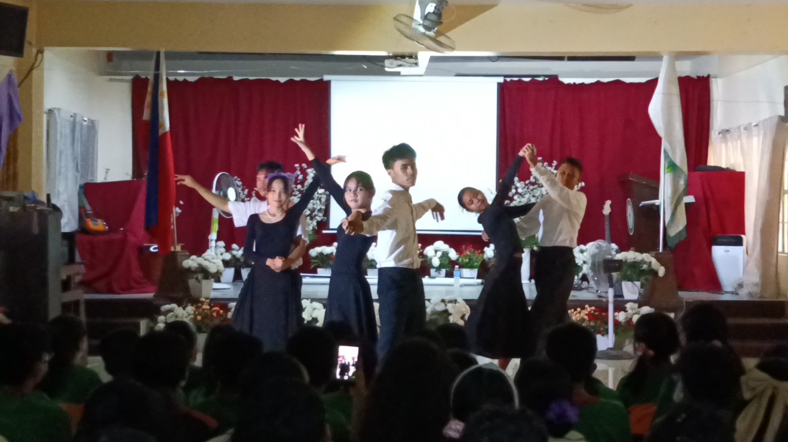
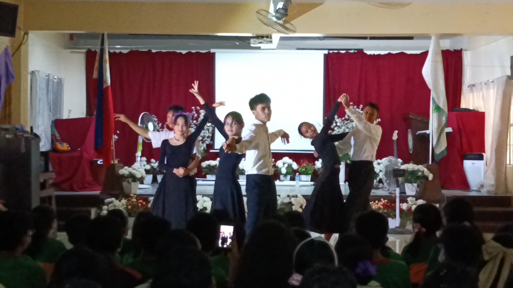
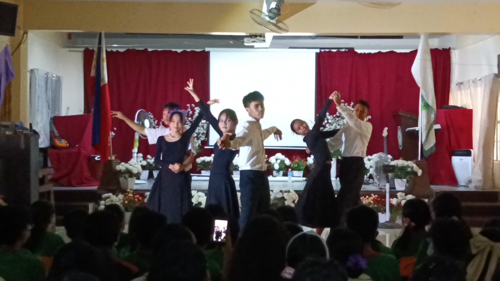

This is my website about the activities/assignments that includes the involvement of the subject of ICT.
ENJOY!
1ST QUARTER
CLASS OFFICERS
Monique - President
Lexi - Vice President
Audre - Secretary
Gab - Treasurer
Julian - Auditor
James - PIO
Yllaiza & Paulo - Sergeant and Arms
AP UNESCO
This was a PT in AP where we had to pick a place in the Philippines, and feature it through a...
I don't know what type of document this is...
I chose here the Hundred Islands from Pangasinan.
MAPEH PREHISTORIC ART
This is a MAPEH ARTWORK
where we try to replicate prehistoric art
using pastels, and smudging.
ENGLISH DIALOGUE
This was a PT in English where we choose a dialogue style,
and make a skit based on that style.
MAPEH ENVIRONMENT HEALTH
This is a collab PT between MAPEH and ICT,
about the health of our environment, and our surrondings.
TEACHERS' DAY- SIR SANTOS
This was a PT in ICT for Teachers' Day where each group got assigned
with a teacher/s, and we got to make a video about them. Our group got assigned to Sir Santos.
2ND QUARTER
ESP FILM FESTIVAL ENTRY
This is our RT's entry
in the ESP's Film Festival for Grade 9.
We were able to represent our section, and
we got 2nd place here, so that's nice.
(No video because large video size. ;-;)
ICT PT 1
This is the first PT
on ICT where we used HTML coding. Looking back at this,
I'm kinda impressed on how far I have come in coding
despite having no experience.
MAPEH CHACHA
This is a PT in MAPEH, where we got assigned a partner,
and we would make our own cha-cha dance using the steps that sir taught us.
I got assigned with Yllaiza, and it's definitely an advantage when you have a partner
that knows how to dance well.
BOOK TRAILER CONTEST
This is a PT for English. The class got split into two groups,
made a movie trailer about a book made by Sir Bienvenido Santos.
It's about these students that hate their teacher because
they cannot be open-minded and later realize the mistakes they have done.
VPOP
Trauma
MR AND MS MVP
Trauma?
ARTS LINEAR PERSPECTIVE
Artwork using the strategy of Linear Perspective.
HEALTH POSTER: DRUGS
Poster about Drugs.
CHRISTMAS PARTY
The Christmas Party this school year was very enjoyable. Great games, many food, and I got the chance to play my friend's VR.
By the way definitely great quality hihihihhihi
3RD QUARTER
NEOCLASSICAL DRAWING
Artwork replacating the Neoclassical style.
ESP MAKATARUNGANG PANLIPUNAN
This is a PT in ESP where we find a person/people that we think are doing justful actions to our community.
VARIETY SHOW
This is a major PT of ESP(and with other subjects) where we showcase
our different talents in a 45-minute show. I featured in
Festival Dance, and Waltz:

4TH QUARTER
FILIPINO NOLI ME TANGERE PRESENTATION
We were assigned in groups of 3, and each group
was assigned to present chapters of Noli Me Tangere.
RESEARCH DEFENSE
A PT in Research where we present and defend our research topic. It actually went pretty smoothly.
FAMILY TREE NI JOSE RIZAL
A PT in Filpino where we recreated the family of Jose Rizal.
PERSONAL LIFE PLAN
A PT in ESP where we plan our future life. This is of course, subjected to change.
OPERA MAGAZINE
A PT in MAPEH where we made a Romantic-Opera Magazine Cover of ourselves.
ICT PORTFOLIO
A PT in ICT where we feature some of the activities we have done in Grade 9.
EPILOGUE
> This is the end of my portfolio for ICT.
> I had a lot of fun making this, especially with implementing the pictures, and videos.
> This website took 230+ lines of HTML code, and 170+ lines of CSS code. Wowzers
> I want to thank everyone that got me through Grade 9, especially our beloved teachers that have helped us through these 8-9 months of school.


.jpg)
 
